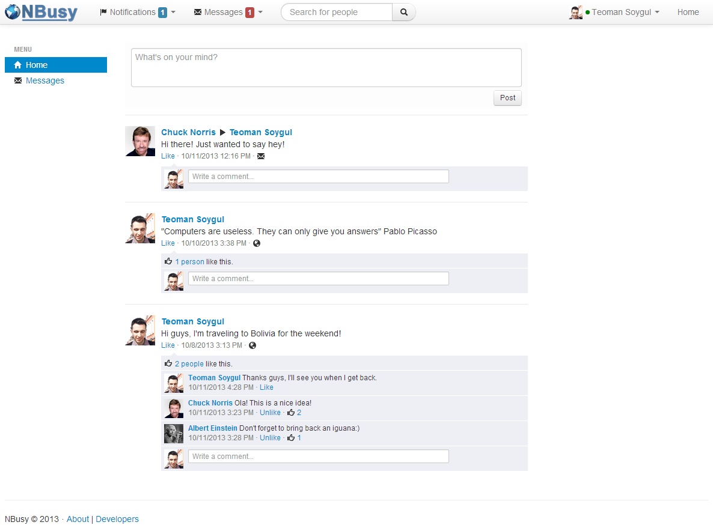
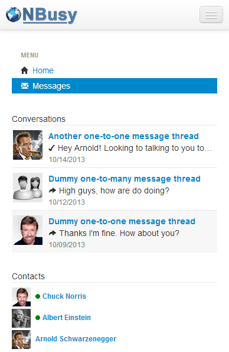

I'm re-writing the 3.0 version of this project with Go (golang) and deprecated the Web client in favor of mobile clients (iOS/Android). I'm still maintaining the KOAN Stack and hope to use it in future projects as Node.js and AngularJS shakes of their perks.
I've re-written the 2.0 version of this project with Node.js and AngularJS. This effort gave rise to the KOAN Stack. It is a boilerplate that provides a nice starting point for full stack JavaScript Web development with Koa, AngularJS, and Node.js along with MongoDB and WebSockets.
NBusy (nbusy.com) is a social networking platform full with inspirational ideas. This is something that I started as a learning experience and it is still an ongoing project. The first version is written with .NET and C#. Using ASP.NET Web API as the RESTful backend and the Bootstrap/jQuery/ASP.NET MVC goodness as the frontend, this project sits on solid foundation. SignalR provides the real-time updates between users (pure owesomeness!). Finally, the Android and iOS client apps have been built with Xamarin, with massive code reuse between all platforms. As always, the .NET client SDK is open-sourced and is hosted on GitHub.
As highlighted before, NBusy is a platform built on .NET, SignalR, ASP.NET MVC and Web API. Each page itself is a single page application made with jQuery (i.e. messages, wall, etc.). Following sums up the entire tech stack nicely:
Everything starts with a simple ‘Login with Facebook’ button where you use your existing FB account to login to NBusy, and choose yourself a unique password. This is necessary as a quickstart, as we will be using your existing username, profile image, etc. to set up your NBusy profile, and save you that hassle.

As soon as you login, you’ll be greeted by our genius chatbot called A. Einstein (!) with a welcome post on your wall. You can comment on its post to start a conversation with Einstein right away, but don’t expect him to be brilliant. When you are distracted enough by the chatbot, you will want to add your friends to your contact list. Doing that is as easy as using the search box on the top of the page and sending your buddies friend-requests. As soon as they approve your request, they will appear in your contact list. Their posts will start to show on your home page and you can post messages, images, and videos on their walls too.
Apart from the user walls, you can also interact with your friends via the messenger app. NBusy’s instant messenger is equipped with utmost security. Your messages are encrypted with your very own crypto key so no one but you have access to them (yes, not even us!) Messages are encrypted/decrypted only on your device with a key derived from your password. A side effect of this is that your messages are lost forever if you forget your password! Taking things one step further, you can enable the ‘fleeting’ messaging mode for some or all of your friends so you messages will not be stored at all, and will disappear forever within 24 hours.

Yet again you can test the messenger with Albert the chatbot. You can also start group conversations with your friends and name these conversation groups as you wish (i.e. guitar course chatter). You can share images, music, and videos with individual friends as well as groups. Yet again in fleeting mode, any of these shares will disappear the following day. Also, any of your friends who are online will receive your messages and shares immediately on their mobile phones, PCs, etc. You can check people’s online status on your contact list (indicated with a green circle) as well as your own (click the top right drawer button on mobiles).
NBusy is a social platform for communicating with ultimate security and privacy. All your messages are stored encrypted with unique keys thus ensuring that no one else than you can read your conversations. Additionally, in fleeting mode the messages are never stored and live only for a day until they disappear. You can share anything with your friends, either privately or on your wall.
NBusy has Web and mobile clients helping people communicate with anyone anywhere. Its instant messaging capabilities are designed with one goal in mind: keeping conversations private. It also makes it easy to share anything with friends privately, or with the rest of the world publicly.